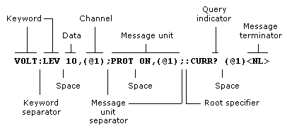

This topic contains a brief introduction to the SCPI programming language.
SCPI (Standard Commands for Programmable Instruments) is a programming language for controlling test and measurement instruments. SCPI provides instrument control with a standardized command syntax and style, as well as a standardized data interchange format.
SCPI has two types of commands, common and subsystem.
Common commands are defined by the IEEE 488.2 standard to perform common interface functions such as reset, status, and synchronization. All common commands consist of a three-letter mnemonic preceded by an asterisk: *RST *IDN? *SRE 8. Common commands are located in the IEEE-488.2 Common Commands group.
Subsystem commands perform specific instrument functions. They can be a single command or a group of commands. The groups are comprised of commands that extend one or more levels below the root. Subsystem commands are arranged alphabetically according to the function they perform. The following figure shows a portion of a subsystem command tree, from which you access the commands located along the various paths. Some [optional] commands have been included for clarity.
:OUTput
[:STATe]
<Bool>,(@<chanlist>)
:DELay
:FALL
<NRf+>,(@<chanlist>)
:RISE
<NRf+>,(@<chanlist>)
:INHibit
:MODE
<mode>
:STATus
:OPERation
[:EVENt]?
(@<chanlist>)
:CONDition?
(@<chanlist>)
Multiple SCPI commands can be combined and sent as a single message with one message terminator. There are two important considerations when sending several commands within a single message:
Use a semicolon to separate commands within a message.
There is an implied header path that affects how commands are interpreted by the instrument.
The header path can be thought of as a string that gets inserted before each command within a message. For the first command in a message, the header path is a null string. For each subsequent command the header path is defined as the characters that make up the headers of the previous command in the message up to and including the last colon separator. An example of a message with two commands is:
OUTPut:STATe ON,(@1);PROTection:CLEar (@1)
which shows the use of the semicolon separating the two commands, and also illustrates the header path concept. Note that with the second command, the leading header "OUTPut" was omitted because after the "OUTPut:STATe ON" command, the header path became defined as "OUTPut" and thus the instrument interpreted the second command as:
OUTPut:PROTection:CLEar (@1)
In fact, it would have been syntactically incorrect to include the "OUTPut" explicitly in the second command, since the result after combining it with the header path would be:
OUTPut:OUTPut:PROTection:CLEar (@1)
which is incorrect.
In order to combine commands from different subsystems, you need to be able to reset the header path to a null string within a message. You do this by beginning the command with a colon (:), which discards any previous header path. For example, you could clear the output protection and check the status of the Operation Condition register in one message by using a root specifier as follows:
OUTPut:PROTection:CLEar (@1);:STATus:OPERation:CONDition? (@1)
The following message shows how to combine commands from different subsystems as well as within the same subsystem:
VOLTage:LEVel 7.5,(@1);PROTection 10,(@1);:CURRent:LEVel 0.5,(@1)
Note the use of the optional header LEVel to maintain the correct path within the subsystems, and the use of the root specifier to move between subsystems.
You can combine common commands with subsystem commands in the same message. Treat the common command as a message unit by separating it with a semicolon (the message unit separator). Common commands do not affect the header path; you may insert them anywhere in the message.
OUTPut OFF,(@1);*RCL 1;OUTPut ON,(@1)
Observe the following precautions with queries:
Add a blank space between the query indicator (?) and any subsequent parameter such as a channel list.
Allocate the proper number of variables for the returned data.
Read back all the results of a query before sending another command to the instrument. Otherwise, a Query Interrupted error will occur and the unreturned data will be lost.
When commands are coupled it means that the value sent by one command is affected by the settings of another command. The following commands are coupled:
[SOURce:]CURRent and [SOURce:]CURRent:RANGe
[SOURce:]VOLTage and [SOURce:]VOLTage:RANGe
If a range command is sent that places an output on a range with a lower maximum setting than the present level, an error is generated. This also occurs if a level is programmed with a value too large for the present range.
These types of errors can be avoided by sending the both level and range commands as a set, in the same SCPI message. For example,
CURRent 10,(@1);CURRent:RANGe 10,(@1)<NL>
will always be correct because the commands are not executed until the message terminator is received. Because the range and setting information is received as a set, no range/setting conflict occurs.

There are two types of SCPI messages, program and response.
A program message consists of one or more properly formatted SCPI commands sent from the controller to the instrument. The message, which may be sent at any time, requests the instrument to perform some action.
A response message consists of data in a specific SCPI format sent from the instrument to the controller. The instrument sends the message only when commanded by a program message "query."
The following figure illustrates the SCPI message structure.

The simplest SCPI command is a single message unit consisting of a command header (or keyword) followed by a message terminator such as a newline. The message unit may include a parameter after the header. The parameter can be numeric or a string.
*RST<NL>
VOLTage 20,(@1)<NL>
The channel parameter is required to address one or more channels. It has the following syntax:
(@<channel> [,<channel>][,<channel>][,<channel>])
You can also specify a range of sequential channels as follows:
(@<start_channel>:<end_channel>)
For example, (@2) specifies channel 2 and (@1:3) specifies channels 1 through 3. The channel list, shown as <chanlist> throughout this document, must be preceded with the @ symbol and must be enclosed in parentheses (). A maximum of 4 channels may be specified through a combination of single channels and ranges. Query results are channel list order-sensitive. Results are returned in the order they are specified in the list.
|
|
When adding a channel list parameter to a query, you must include a space character between the query indicator (?) and the channel list parameter. Otherwise error –103, Invalid separator will occur. |
Headers, also referred to as keywords, are instructions recognized by the instrument. Headers may be in the long form or in the short form. In the long form, the header is completely spelled out, such as VOLTAGE, STATUS, and DELAY. In the short form, the header has only the first three or four letters, such as VOLT, STAT, and DEL.
When the long form notation is used in this document, the capital letters indicate the equivalent short form. For example, MEASure is the long form, and MEAS indicates the short form equivalent.
Following a header with a question mark turns it into a query (VOLTage?, VOLTage:TRIGgered?). The ? is the query indicator. If a query contains parameters, place the query indicator at the end of the last header, before the parameters.
VOLTage:TRIGgered? MAX,(@1)
When two or more message units are combined into a compound message, separate the units with a semicolon.
STATus:OPERation? (@1);QUEStionable? (@1)
When it precedes the first header of a message unit, the colon becomes the root specifier. It tells the command parser that this is the root or the top node of the command tree.
A terminator informs SCPI that it has reached the end of a message. The following messages terminators are permitted:
newline <NL>, which is ASCII decimal 10 or hex 0A
end or identify <END> (EOI with ATN false)
both of the above <NL><END>
also <CR><NL>
In the examples used in this document, there is an assumed message terminator at the end of each message.

The following SCPI conventions are used throughout this guide.
|
Angle brackets |
Items within angle brackets are parameter abbreviations. For example, <NR1> indicates a specific form of numerical data. |
|
Vertical bar |
Vertical bars separate alternative parameters. For example, VOLT | CURR indicates that either "VOLT" or "CURR" can be used as a parameter. |
|
Square brackets |
Items within square brackets are optional. The representation [SOURce:]VOLTage means that SOURce: may be omitted. |
|
Parentheses |
Items within parentheses are used in place of the usual parameter types to specify a channel list. The notation (@1:3) specifies a channel list that includes channels 1, 2, and 3. The notation (@1,3) specifies a channel list that includes only channels 1 and 3. |
|
Braces |
Braces indicate parameters that may be repeated zero or more times. It is used especially for showing arrays. The notation <A>{,<B>} shows that parameter "A" must be entered, while parameter "B" may be omitted or may be entered one or more times. |
Data programmed or queried from the instrument is ASCII. The data may be numerical or character string.
|
<NR1> |
Digits with an implied decimal point assumed at the right of the least-significant digit. Example: 273 |
|
<NR2> |
Digits with an explicit decimal point. Example: 27.3 |
|
<NR3> |
Digits with an explicit decimal point and an exponent. Example: 2.73E+02 |
|
<NRf> |
Extended format that includes <NR1>, <NR2>
and <NR3>. |
|
<NRf+> |
Expanded decimal format that includes <NRf> and
MIN, MAX. |
|
<Bool> |
Boolean Data. Can be numeric (0, 1), or named (OFF, ON). |
|
<SPD> |
String Program Data. Programs string parameters enclosed in single or double quotes. |
|
<CPD> |
Character Program Data. Programs discrete parameters. Accepts both the short form and the long form. |
|
<SRD> |
String Response Data. Returns string parameters enclosed in single or double quotes. |
|
<CRD> |
Character Response Data. Returns discrete parameters. Only the short form of the parameter is returned. |
|
<AARD> |
Arbitrary ASCII Response Data. Permits the return of undelimited 7-bit ASCII. This data type has an implied message terminator. |
|
<Block> |
Arbitrary Block Response Data. Permits the return of definite length and indefinite length arbitrary response data. This data type has an implied message terminator. |
The SCPI language allows the use of suffixes and multipliers.
|
Class |
Suffix |
Unit |
Unit with Multiplier |
|
Current |
A |
ampere |
MA (milliampere) |
|
Amplitude |
V |
volt |
MV (millivolt) |
|
Time |
S |
second |
MS (millisecond) |
|
Common Multipliers |
|
|
|
|
1E3 |
K |
kilo |
|
|
1E-3 |
M |
milli |
|
|
1E-6 |
U |
micro |
|

SCPI commands sent to the instrument are processed either sequentially or in parallel. Sequential commands finish execution before a subsequent command begins. Parallel commands allow other commands to begin executing while the parallel command is still executing.
The following is a list of parallel commands. You should use some form of command synchronization as discussed in this section before assuming that these commands have completed.
|
OUTPut:STATe |
INITiate |
|
VOLTage |
OUTPut:PROTection:CLEar |
|
CURRent |
FUNCtion:MODE |
The *WAI, *OPC, and *OPC? common commands provide different ways of indicating when all transmitted commands, including any parallel ones, have completed their operations. Some practical considerations for using these commands are as follows:
*WAI - prevents the instrument from processing subsequent commands until all pending operations are completed. For example, the *WAI command can be used to make a voltage measurement after an output on command has completed:
OUTPut ON,(@1);*WAI;:MEASure:VOLTage? (@1)
*OPC? - places a 1 in the Output Queue when all pending operations have completed. Because it requires your program to read the returned value before executing the next program statement, *OPC? can be used to cause the controller to wait for commands to complete before proceeding with its program.
*OPC - sets the OPC status bit when all pending operations have completed. Since your program can read this status bit on an interrupt basis, *OPC allows subsequent commands to be executed.
|
|
The trigger subsystem must be in the Idle state for the status OPC bit to be true. As far as triggers are concerned, OPC is false whenever the trigger subsystem is in the Initiated state. |
You can send a Device Clear at any time to abort a SCPI command that may be hanging up the GPIB interface. Device Clear clears the input and output buffers of the instrument and prepares the instrument to accept a new command string. The status registers, error queue, and all configuration states are left unchanged by Device Clear. The following statement shows how to send a device clear over the GPIB interface using Agilent Basic:
CLEAR 705 IEEE-488 Device Clear